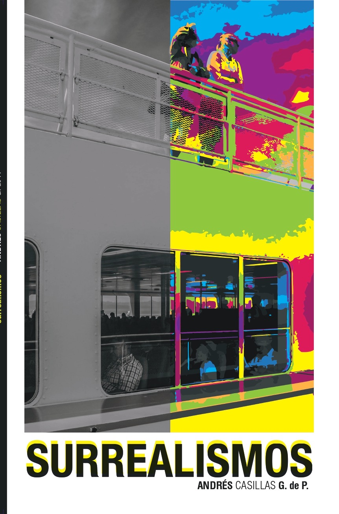
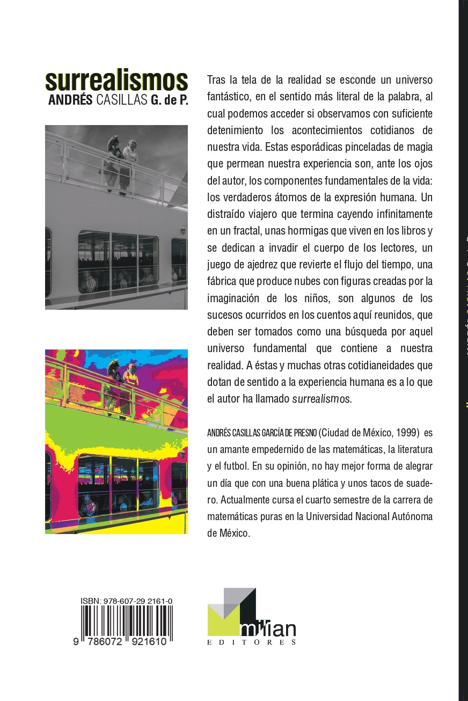

Books
A short story book I wrote (2020)


In Search of Lost Time
📖 Milestone
I am very proud to announce that I have finished reading Marcel Proust's "À la recherche du temps perdu" — all seven volumes! This journey started in 2017 and finished in 2025. It is my absolute favorite book of all time, and I even feel a bit strange without it :(
🏆 My ranking
My ranking of its volumes (in Spanish) is:
- Volume 4: Sodoma y Gomorra.
- Volume 2: A la Sombra de las Muchachas en Flor.
- Volume 1: Por el Camino de Swann.
- Volume 7: El Tiempo Recobrado.
- Volume 5: La Prisionera.
- Volume 6: La Fugitiva.
- Volume 3: El Mundo de Guermantes.
Favorite math books
- A New Kind of Science, Stephen Wolfram.
- Cellular Automata and Complexity, Stephen Wolfram.
- A Multigrid Tutorial, William Briggs.
- Theory of Complex Functions, Reinhold Remmert.
- Una introducción a los fundamentos del cálculo: el infinito y los números reales, Javier Fernández García.
- Indra's Pearls: The Vision of Felix Klein, David Mumford, Caroline Series and David Wright.
- Fractals Everywhere, Michael F. Barnsley.
- La Historia de un Empujón, Laura Ortiz and Ernesto Rosales.
- Computability Theory, Rebecca Weber.
- Approximation Algorithms, Vijay Vazirani.
- Gödel's Incompleteness Theorems, Raymond Smullyan.
- Proofs from THE BOOK, Martin Aigner and Günter M. Ziegler.
- Combinatorial Optimization, Bernhard Korte and Jens Vygen.
- The Book of Prime Number Records, Paulo Ribenboim.
- Hilbert y Gödel: Dos perspectivas de la matemática, Carlos Torres Alcaráz.
- Handbook of Natural Computing, Grzegorz Rozenberg, Thomas Bäck, Joost N. Kok.
- 17 Lectures on Fermat Numbers: From Number Theory to Geometry, Florian Luca et al.
Favorite non-math books
- À la recherche du temps perdu, Marcel Proust.
- Slaughterhouse Five, Galápagos, Armageddon in Retrospect, and The Sirens of Titan, Kurt Vonnegut.
- El Ruletista and Lulu, Mircea Cărtărescu.
- Seda, Mr. Gwyn, and Esta Historia, Alessandro Baricco.
- El amor en los tiempos del cólera, Gabriel García Márquez.
- La Piel Fría, Albert Sánchez Piñol.
- Ficciones and El Aleph, Jorge Luis Borges.
- Primavera con Esquina Rota and La Tregua, Mario Benedetti.
- Las batallas en el desierto, José Emilio Pacheco.
- Los años del Águila, Claude Fell.
- El Bigote, Emmanuel Carrère.
- Niebla, Miguel de Unamuno.
Menu